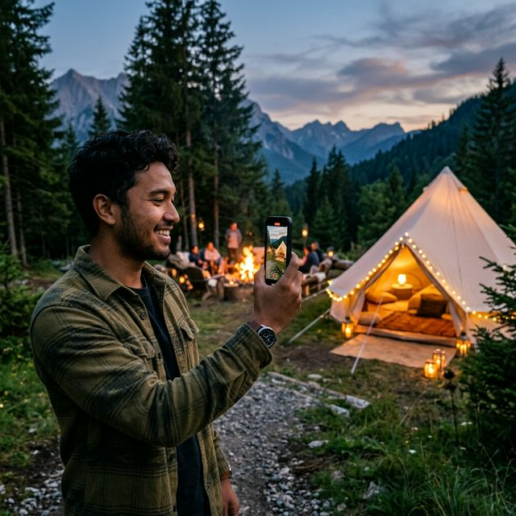

Mengunggah dokumentasi glamping ke TikTok atau Reels Instagram rasanya kurang maksimal jika hasilnya goyang, resolusi pecah, dan pencahayaan buruk. Tenang, Anda tidak perlu merogoh kocek puluhan juta untuk membeli kamera profesional.
Kawasan pegunungan seperti Batu Sunrise Camp sudah menyediakan pencahayaan alami yang magis dan latar belakang yang sangat mendukung. Dengan berbekal smartphone di genggaman, ikuti taktik rahasia pembuatan video berkesan "sinematik" berikut ini.
1. Persiapan Setting Hp yang Tepat
Langkah paling awal adalah mengatur kamera hp ke resolusi maksimal. Masuk ke pengaturan kamera HP Anda dan atur agar resolusi video minimal 1080p dengan 60fps (atau 4K 30fps/60fps jika kapasitas penyimpanan memadai).
Mengapa 60fps sangat disarankan? Fitur 60fps memungkinkan Anda untuk memperlambat video pada tahap *editing* (slow-motion) sebesar 50% tanpa terlihat putus-putus. Kepingan video yang diperlambat ini adalah nyawa dari efek *cinematic*.
2. Kunci Stabilisasi: Tahan Napas & Teknik "Ninja Walk"
Video yang *shaky* (berguncang) adalah musuh utama dari kesan sinema kelas atas. Jika tidak memiliki *gimbal/stabilizer* hape:
- Gunakan kedua tangan untuk menggenggam hape, rapatkan siku ke arah tulang rusuk agar tubuh bertindak sebagai tripod alami.
- Gunakan *Ninja Walk*: tekuk lutut sedikit saat berjalan, lalu jinjit maju dari tumit ke jari-jari kaki secara halus untuk meredam guncangan langkah.
- Tahan napas saat pergerakan transisi (panning) kamera perlahan dari kiri ke kanan.
3. Ciptakan Kedalaman Visual (Depth of Field)
Jangan sekadar merekam dari posisi berdiri secara asal-asalan. Ciptakan komposisi yang menunjukkan "depth". Anda dapat meletakkan kamera hp menjalar di tanah merapatkan *foreground* dedaunan pinus atau rumput, sementara kamera menyorot tenda glamping nun jauh di *background*.
Mainkan sentuhan jari pada layar untuk mengunci fokus kamera ("Lock AE/AF"). Biarkan objek depan agak *blur* sambil objek tenda di belakang terlihat tajam.
4. Berburu Cahaya Tepat ("Golden & Blue Hour")
Batu Sunrise Camp menawarkan dua waktu paling dramatis untuk pembuatan video hape:
- Golden Hour (05:30 - 06:30): Nuansa jingga hangat tatkala matahari baru muncul dari balik lembah bukit. Waktu ini sempurna menyorot wajah bahagia rombongan Anda tanpa bayangan kasar.
- Blue Hour (17:30 - 18:30): Detik-detik transisi saat matahari sudah tenggelam, tetapi langit belum gelap total dan memancarkan wewarna biru magis. Lampu tenda kekuningan merona akan terlihat paling eksotis saat jam ini direkam.
5. Variasi B-Roll (Detail Footage)
Video sinematik menggabungkan bidikan luas (wide angle) dengan gambar super detail. Catatlah setidaknya 3 "b-roll" detail intim saat Anda camping:
- Gelas kopi panas berteman uap tipis yang mengepul.
- Gerakan api unggun membakar kayu.
- Telapak kaki yang dibalut kaus kaki hangat melangkah keluar dari dalam tenda.
6. Aplikasi Edit dan Pemilihan Musik
Masukkan semua kumpulan *footage* Anda ke aplikasi pendukung mutakhir pendar *grade* warna gratisan seperti CapCut. Sesuaikan kecepatan klip dengan ketukan (beat) musik *chill pop*, *lo-fi accoustic*, atau instrumental *folk* yang merepresentasikan pesona riil dataran tinggi Batu.